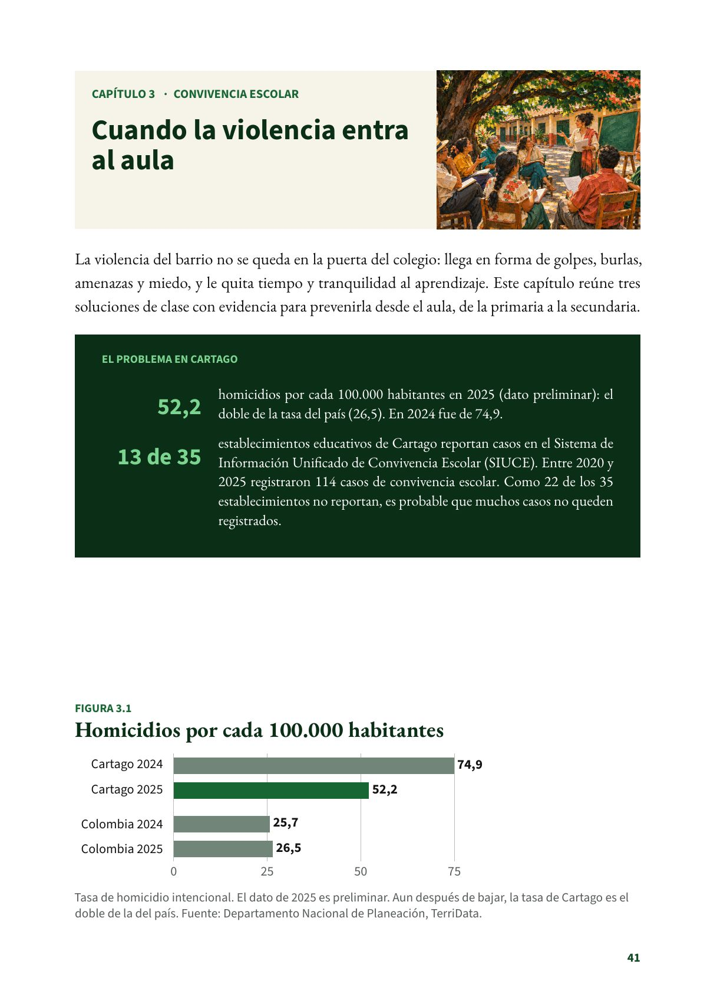
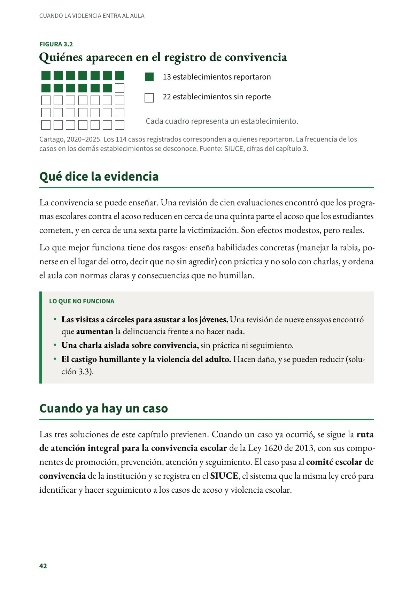
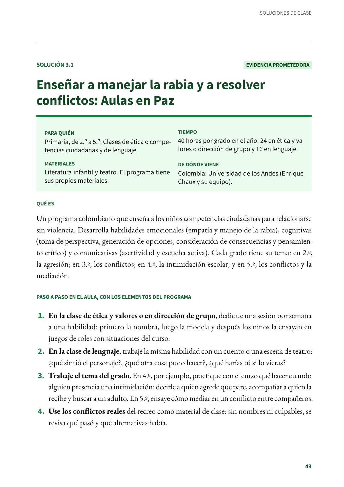

Cuando la violencia entra al aula
La violencia del barrio entra al colegio. Qué dice la evidencia, qué no funciona y qué hacer cuando ya hay un caso.
PDF · 3 págs. · 1,2 MBLa violencia del barrio no se queda en la puerta del colegio: llega en forma de golpes, burlas, amenazas y miedo, y le quita tiempo y tranquilidad al aprendizaje. Este capítulo reúne tres soluciones de clase con evidencia para prevenirla desde el aula, de la primaria a la secundaria.
El problema en Cartago
- 52,2 homicidios por cada 100.000 habitantes en 2025 (dato preliminar): el doble de la tasa del país (26,5). En 2024 fue de 74,9.
- 13 de 35 establecimientos educativos de Cartago reportan casos en el Sistema de Información Unificado de Convivencia Escolar (SIUCE). Entre 2020 y 2025 registraron 114 casos de convivencia escolar. Como 22 de los 35 establecimientos no reportan, es probable que muchos casos no queden registrados.
Qué dice la evidencia
La convivencia se puede enseñar. Una revisión de cien evaluaciones encontró que los programas escolares contra el acoso reducen en cerca de una quinta parte el acoso que los estudiantes cometen, y en cerca de una sexta parte la victimización. Son efectos modestos, pero reales.
Lo que mejor funciona tiene dos rasgos: enseña habilidades concretas (manejar la rabia, ponerse en el lugar del otro, decir que no sin agredir) con práctica y no solo con charlas, y ordena el aula con normas claras y consecuencias que no humillan.
Lo que no funciona
- Las visitas a cárceles para asustar a los jóvenes. Una revisión de nueve ensayos encontró que aumentan la delincuencia frente a no hacer nada.
- Una charla aislada sobre convivencia, sin práctica ni seguimiento.
- El castigo humillante y la violencia del adulto. Hacen daño, y se pueden reducir (solución 3.3).
Cuando ya hay un caso
Las tres soluciones de este capítulo previenen. Cuando un caso ya ocurrió, se sigue la ruta de atención integral para la convivencia escolar de la Ley 1620 de 2013, con sus componentes de promoción, prevención, atención y seguimiento. El caso pasa al comité escolar de convivencia de la institución y se registra en el SIUCE, el sistema que la misma ley creó para identificar y hacer seguimiento a los casos de acoso y violencia escolar.
Fuentes del capítulo
Fuentes
Congreso de la República de Colombia. (2013). Ley 1620 de 2013, arts. 12 y 28 a 30. secretariasenado.gov.co
Departamento Nacional de Planeación. (2026). TerriData: tasa de homicidio intencional por cada 100.000 habitantes (serie 6/1/13; Cartago, código 76147, y Colombia, código 01001). terridata.dnp.gov.co
Gaffney, H., Ttofi, M. M. y Farrington, D. P. (2021). Effectiveness of school-based programs to reduce bullying perpetration and victimization: An updated systematic review and meta-analysis. Campbell Systematic Reviews, 17(2), e1143. doi.org
Ministerio de Educación Nacional. (2025). Informe anual del Sistema de Información Unificado de Convivencia Escolar (SIUCE). mineducacion.gov.co
Petrosino, A., Turpin-Petrosino, C., Hollis-Peel, M. E. y Lavenberg, J. G. (2013). «Scared Straight» and other juvenile awareness programs for preventing juvenile delinquency. Cochrane Database of Systematic Reviews, (4), CD002796. doi.org
Así se ve en el libro
3 páginas

